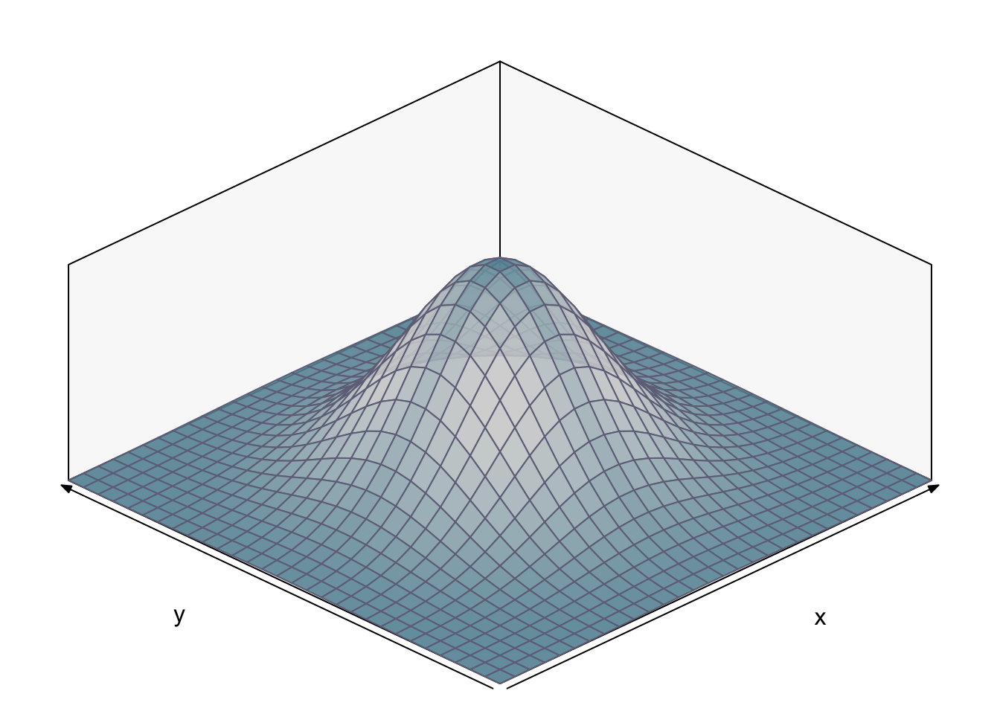
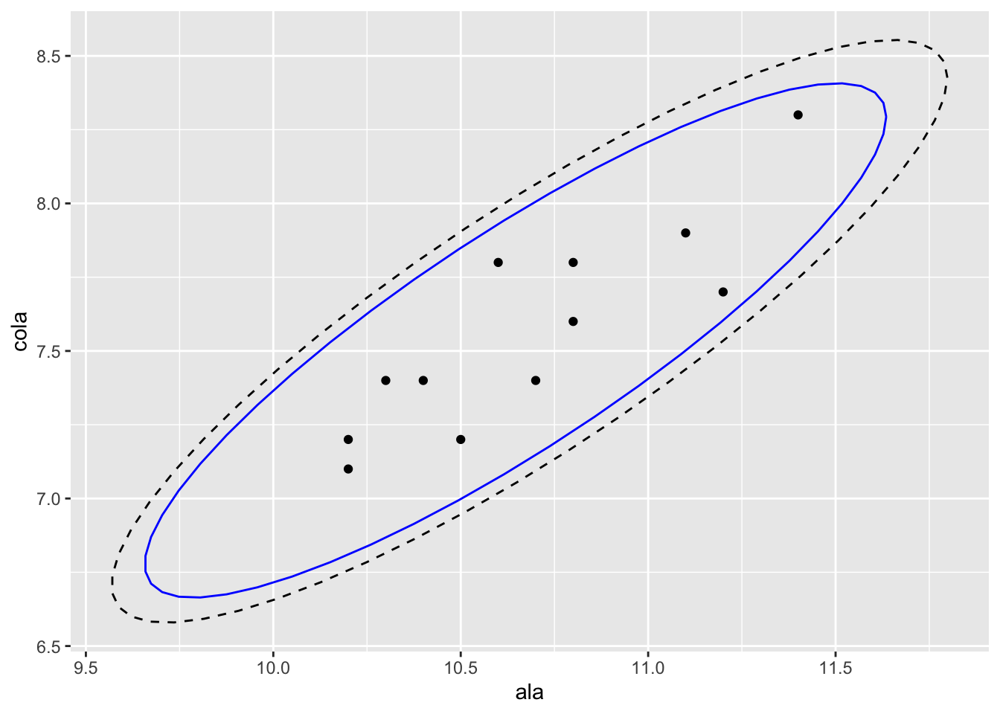

A partir de esta sección estaremos considerando relaciones entre variables de una muestra o población, mediciones de atributos diferentes en un mismo sujeto u objeto. Ejemplos de estas relaciones:
A modo de comparación con otras pruebas que ya hemos tratado:
Distinguir entre una asociación entre variables y una relación causa-efecto.
Al probar la posible relación entre variables, es importante distinguir entre dos métodos muy utilizados en el análisis estadístico: el análisis de correlación y el análisis de regresión.
En el análisis de correlación solamente nos interesa conocer si existe una asociación entre dos variables de mediciones. Con el análisis de regresión queremos modelar la dependencia de una variable respuesta (dependiente) en una variable predictora (independiente).
En el análisis de correlación estamos interesado/as en investigar si existe un patrón de asociaciones entre variables, por lo tanto es mayormente una herramienta descriptiva. Es muy útil para seleccionar variables a considerar en estudios que pudieran ser muy complejos si se consideran todas las variables desde un principio.
En el análisis de correlación nos hacemos las siguientes preguntas:
Calcular el coeficiente de correlación de Pearson y probar su significancia
La medida de la fuerza de la relación entre dos variables es el coeficiente de correlación. El más comúnmente utilizado es el coeficiente de correlación de Pearson, representado por la letra griega \(\rho\), cuando se trata del valor teórico de la población completa de datos. Como usualmente no tenemos todos los valores de una población, sino una muestra, en este caso se usa la letra r.
library (bivariate)
f <- nbvpdf (0, 0, 1, 1, 0)
plot(f)
Figura 1. Distribución Normal Bivariada.
La fórmula para calcular el coeficiente r de una muestra con dos variables es la siguiente:
\[r = \frac{\sum xy - (\frac{\sum x \sum y}{n})}{\sqrt{(\sum x^2 - \frac{(\sum x)^2}{n})(\sum y^2 - \frac{(\sum y)^2}{n})}}\]
dónde:
\(x\) y \(y\) son los valores en pareja de las variables,
\(n\) es el número de pares \(xy\)
El numerador de la fórmula anterior es la covarianza y puede ser positiva o negativa, mientras que el denominador, que es la raíz cuadrada de las suma de cuadrados de cada variable, es siempre positivo. El valor de r (estimador de \(\rho\)) puede estar entre 0 (no hay correlación) y +1 (perfecta correlación) cuando la relación es positiva y entre 0 y -1 cuando es negativa.
Método manual y usando R
Ejemplo 1
Vamos a calcular el coeficiente de correlación de Pearson, para la posible relación lineal entre la longitud del ala (cm) de un especie de ave, y el largo de su cola (cm).
library(kableExtra)
#datos
ala <- c(10.4,10.8,11.1,10.2,10.3,10.2,
10.7,10.5,10.8,11.2,10.6,11.4)
cola <- c(7.4,7.6,7.9,7.2,7.4,7.1,
7.4,7.2,7.8,7.7,7.8,8.3)
#cálculos de sumatorias
n <- length(ala)
##X
sumXi <- sum(ala)
sumXi2 <- sum(ala^2)
sumx2 <- sumXi2 - ((sumXi)^2)/n
##Y
sumYi <- sum(cola)
sumYi2 <- sum(cola^2)
sumy2 <- sumYi2 - ((sumYi)^2)/n
#XY
sumXiYi <- sum(ala*cola)
sumxy <- sumXiYi - (sumXi*sumYi)/n
#tablas de resultados parciales
SumX <- data.frame(sumXi,sumYi2,sumx2)
SumY <- data.frame(sumYi,sumYi2,sumy2)
SumXY <- data.frame(sumXiYi,sumxy)
kable(SumX, format = "markdown", col.names = c("Sumatoria X","Sumatoria X^2", "Suma Cuadrados X"))| Sumatoria X | Sumatoria X^2 | Suma Cuadrados X |
|---|---|---|
| 128.2 | 688.4 | 1.716667 |
kable(SumY, format = "markdown", col.names = c("Sumatoria Y","Sumatoria Y^2", "Suma Cuadrados Y"))| Sumatoria Y | Sumatoria Y^2 | Suma Cuadrados Y |
|---|---|---|
| 90.8 | 688.4 | 1.346667 |
kable(SumXY, format = "markdown", col.names = c("Sumatoria XY", "Covarianza XY"))| Sumatoria XY | Covarianza XY |
|---|---|
| 971.37 | 1.323333 |
#Coeficiente de Correlación
coefcorr <- sumxy/sqrt(sumx2*sumy2)
sprintf("r = %.3f", coefcorr)## [1] "r = 0.870"Mediante R podemos obtener una gráfica de la distribución bivariada de los datos de la muestra, con la elipse del intervalo de confianza conjunto. La función cor calcula el valor del coeficiente de correlación de Pearson (y otros).
library(ggplot2)
# datos
ala <- c(10.4,10.8,11.1,10.2,10.3,10.2,
10.7,10.5,10.8,11.2,10.6,11.4)
cola <- c(7.4,7.6,7.9,7.2,7.4,7.1,
7.4,7.2,7.8,7.7,7.8,8.3)
# gráficas
scatter <- data.frame(ala,cola)
ggplot(scatter, aes(ala, cola)) +
geom_point() +
stat_ellipse(type = "t", level = 0.95, color = "blue") +
stat_ellipse(type = "norm", linetype = 2)
Figura 2. Codistribución de las variables longitud del ala (cm) y longitud de la cola (cm) en una especie de ave. La elipse azul indica el intervalo de confianza 95% multivariado con distribución t y la línea cortada el intevalo de confianza 95% multivariado con distribución normal.
# cálculo coeficiente correlación
rpearson <- cor(ala, cola, method = "pearson")
sprintf("Coeficiente de Correlación de Pearson: %.3f", rpearson)## [1] "Coeficiente de Correlación de Pearson: 0.870"El coeficiente de correlación, r, es un estimador del parámetro poblacional \(\rho\). Podemos preguntarnos si ciertamente existe una correlación entre los valores X y los valores Y de la población, y probar \(H_0: \rho=0\).
Una manera directa de hacerlo es utilizando una tabla de valores críticos de r, con n - 2 grados de libertad (\(\nu\)). Estos valores, en realidad, se basan en el estadístico t, mediante la fórmula: \[r_{\alpha,\nu} = \sqrt \frac{t_{\alpha,\nu}^2}{t_{\alpha,\nu}^2 + \nu}\]
Para nuestro ejemplo el valor crítico de r para \(\alpha\) = 0.05 (dos colas, según nuestra hipótesis) y \(\nu\) = 10, es 0.576. Al compararlo con el valor estimado de r = 0.876, podemos concluir que rechazamos la \(H_0\) y decir que existe alguna relación entre las dos variables. Debo resaltar que esta relación no es necesariamente una de causa y efecto o dependencia de una en particular en la otra.
Mediante R podemos calcular el valor crítico de r:
#valor crítico para r usando una función
#basada en la fórmula r_alfa,nu
critical.r <- function( n, alpha) {
df <- n - 2
critical.t <- qt(alpha/2, df, lower.tail = F)
critical.r <- sqrt( (critical.t^2) / ( (critical.t^2) + df ) )
return(critical.r)
}
#en nuestro caso n = 12, alfa = 0.05 (dos colas)
rcrit <- critical.r(12,0.05)
sprintf("valor crítico de r(0.05,10) = %.3f", rcrit)## [1] "valor crítico de r(0.05,10) = 0.576"También podemos realizar la prueba completa en R, utilizando la función cor.test:
cor.test(ala, cola, method="pearson")##
## Pearson's product-moment correlation
##
## data: ala and cola
## t = 5.5893, df = 10, p-value = 0.0002311
## alternative hypothesis: true correlation is not equal to 0
## 95 percent confidence interval:
## 0.5923111 0.9631599
## sample estimates:
## cor
## 0.8703546
Producir una matriz de coeficientes de correlación entre múltiples variables y evaluar su significancia
En muchos estudios exploratorios, con múltiples variables medidas al mismo tiempo, deseamos calcular todos los posibles valores de r para probar la asociación entre las variables. Esto se puede realizar utilizando programas o paquetes estadísticos que producen una matriz con los resultados del cálculo de todos los posibles valores de r.
Ejemplo 2.
Vamos a explorar la posible relación entre variables socio-económicas y de salud pública en 53 ciudades pequeñas de Estados Unidos. Las variables a considerar son:
death1K: mortalidad por 1000 habitantes
doctor100K: cantidad de doctores por 100000 habitantes
hosp100K: camas de hospitales por 100000 habitantes
income1K: ingreso per capita en miles de dólares
density: densidad poblacional, habitantes por milla cuadrada
Utilizando la función cor aplicada a una matriz de datos (en realidad un data.frame) vamos a crear la matriz de correlaciones.
# leer datos desde Excel
library(readxl)
small_city <- read_excel("./data/death_small_cities.xlsx",
sheet = "data")
head(small_city)## # A tibble: 6 x 5
## death1K doctor100K hosp100K income1K density
## <dbl> <dbl> <dbl> <dbl> <dbl>
## 1 8 78 284 9.10 109
## 2 9.30 68 433 8.70 144
## 3 7.5 70 739 7.20 113
## 4 8.90 96 1792 8.90 97
## 5 10.2 74 477 8.30 206
## 6 8.30 111 362 10.9 124coef1 <- cor(small_city, method = "pearson")
round(coef1, 2)## death1K doctor100K hosp100K income1K density
## death1K 1.00 0.12 0.11 -0.17 -0.28
## doctor100K 0.12 1.00 0.30 0.43 -0.02
## hosp100K 0.11 0.30 1.00 0.03 0.19
## income1K -0.17 0.43 0.03 1.00 0.13
## density -0.28 -0.02 0.19 0.13 1.00También podemos obtener el valor de P (probabilidad) de cada coeficiente para comparar con el valor establecido de \(\alpha\) y decidir si se acepta o no la \(H_0\). Usamos en este caso la función rcorr del paquete Hmisc.
library(Hmisc)
coef2 <- rcorr(as.matrix(small_city), type = "pearson")
coef2## death1K doctor100K hosp100K income1K density
## death1K 1.00 0.12 0.11 -0.17 -0.28
## doctor100K 0.12 1.00 0.30 0.43 -0.02
## hosp100K 0.11 0.30 1.00 0.03 0.19
## income1K -0.17 0.43 0.03 1.00 0.13
## density -0.28 -0.02 0.19 0.13 1.00
##
## n= 53
##
##
## P
## death1K doctor100K hosp100K income1K density
## death1K 0.4091 0.4305 0.2181 0.0442
## doctor100K 0.4091 0.0316 0.0012 0.8873
## hosp100K 0.4305 0.0316 0.8450 0.1809
## income1K 0.2181 0.0012 0.8450 0.3582
## density 0.0442 0.8873 0.1809 0.3582Cuando se realizan múltiples pruebas independientes el error tipo I se incrementa según el número de pruebas. Una manera de solucionar este problema es dividir \(\alpha\) entre el número de pruebas independientes. Para calcular este número usamos esta fórmula:
\[Num.\ pruebas\ independientes = \frac{(Num.\ variables)^2 - Num.\ variables}{2}\]
En este caso el número de pruebas independientes es de:
\[Num.\ pruebas\ independientes = \frac{5^2 - 5}{2} = 10\] Por lo tanto el valor de \(\alpha\) ajustado para este caso es: 0.05/10 = 0.005. Revisando los resultados de la correlación múltiple, solo las variables ingreso per capita y doctores por 100000 habitantes están relacionadas significativamente.
Realizar pruebas no-paramétricas de correlación, cuando no se cumple el supuesto de normalidad bivariada.
Cuando alguno de los datos se encuentra en una escala ordinal, o los supuestos de la correlación paramétrica (normalidad bivariada) no se cumplen, se puede usar una prueba no-paramétrica; la correlación de rangos de Spearman. La hipótesis nula es la misma que en la correlación de Pearson: no hay asociación entre las dos variables.
Tenemos los datos de la masa (g) de 13 tuataras (Hatteria punctata, reptil) adultos machos y del tamaño (\(m^2\)) de sus respectivos territorios. Queremos saber si hay una asociación entre la masa de los reptiles y el territorio que ocupan, queremos probar la hipótesis de que animales meas grandes (masa) defienden territorios más grandes (área). Las mediciones de las variables no tienen distribución normal y no son muchos para obviar esta violación del supuesto.
Rango y diferencias de rango entre las variables
Para calcular el r de Spearman:
library(kableExtra)
# datos
tuatara <- read.csv("./data/tuatara.txt", sep = "")
# tabla
tuatara %>%
kable(caption = "Tabla 1. Masa (g) de tuataras machos adultos (n = 13) y tamaño de su territorio (m2). Rx y Ry representan el número de rango de los datos de cada variable ordenados de menor a mayor; d d.2 es la diferencia de rangos (Rx - Ry) para cada individuo y su cuadrado.") %>%
kable_classic(full_width = F, html_font =
"Cambria")| tuatara | mass | Rx | territory | Ry | d | d.2 |
|---|---|---|---|---|---|---|
| 1 | 510 | 6 | 6.9 | 6 | 0 | 0 |
| 2 | 773 | 9 | 20.6 | 12 | -3 | 9 |
| 3 | 840 | 13 | 17.2 | 9 | 4 | 16 |
| 4 | 505 | 5 | 6.7 | 5 | 0 | 0 |
| 5 | 765 | 8 | 20.0 | 10 | -2 | 4 |
| 6 | 780 | 10 | 24.1 | 13 | -3 | 9 |
| 7 | 235 | 1 | 1.5 | 1 | 0 | 0 |
| 8 | 790 | 11 | 13.8 | 8 | 3 | 9 |
| 9 | 440 | 3 | 1.7 | 2 | 1 | 1 |
| 10 | 435 | 2 | 2.1 | 3 | -1 | 1 |
| 11 | 815 | 12 | 20.2 | 11 | 1 | 1 |
| 12 | 460 | 4 | 3.0 | 4 | 0 | 0 |
| 13 | 697 | 7 | 10.3 | 7 | 0 | 0 |
Para el ejemplo tenemos que:
\(\sum d^2\) = 50
\(r_s\) = 0.863
Evaluamos la \(H_0:r_s = 0\) utilizando la Tabla de Valores Críticos para el Coeficiente de Correlación de Spearman. El valor de \(r_{s,0.05,13}\) es 0.560, por lo tanto podemos rechazar la \(H_0\) para \(\alpha\) = 0.05. En los tuataras macho la masa corporal está correlacionada con el área del territorio que ocupan.
Utilizamos la función cor.test especificando que el método es el \(r_s\) de Spearman.
# cor.test para Spearman
cor.test(tuatara$mass, tuatara$territory, method = "spearman")##
## Spearman's rank correlation rho
##
## data: tuatara$mass and tuatara$territory
## S = 50, p-value = 0.0001888
## alternative hypothesis: true rho is not equal to 0
## sample estimates:
## rho
## 0.8626374El resultado indica que el valor de p está por debajo del \(\alpha\) = 0.05, y por lo tanto podemos rechazar la \(H_0\) con baja probabilidad de equivocarnos.